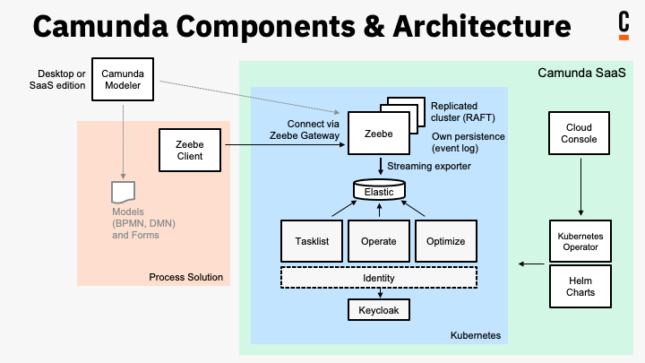

APIs & tools
This section steps through available concepts for integration:
- Control your Camunda 8 process automation by deploying processes, starting process instances, activating jobs, and more using supplemental and community-maintained Zeebe client libraries.
- Interact with the Camunda 8 ecosystem by learning about Camunda Components and their APIs to communicate with your cluster, search, get and change data, create Cloud API clients, and more.
- Develop a custom front end for task applications by learning the basic architecture of task applications, the APIs for interacting with Camunda 8 through your applications, and the open source form.js library for creating and embedding human task forms into these applications.
You're permitted to use these web apps and APIs for free with the Free Edition in non-production environments. To use the software in production, purchase the Camunda Enterprise Edition. Read more in our licensing documentation.
Deploy processes, start process instances, and more using Zeebe client libraries
Clients allow applications to do the following:
- Deploy processes.
- Start and cancel process instances.
- Activate jobs, work on those jobs, and subsequently complete or fail jobs.
- Publish messages.
- Update process instance variables and resolve incidents.
The official clients mentioned below interact with Zeebe, the workflow engine integrated into Camunda 8. All clients require setting up client credentials to authenticate. Clients connect to Camunda 8 via a mix of REST and gRPC, a high-performance, open source, and universal RPC protocol.
Camunda 8 provides several official clients based on this API. Official clients have been developed and tested by Camunda. They also add convenience functions (for example, thread handling for job workers) on top of the core API.
Official Zeebe clients
Official clients have been developed and tested by Camunda. They also add convenience functions (e.g. thread handling for job workers) on top of the core API.
CLI client
Learn how to use the CLI client and command line interface `zbctl` to interact with Camunda 8 and test a connection.
Go client
Instantiate the client by passing in the address of the cluster you want to connect to in a Go application to interact with Camunda 8.
Java client
Provide a job worker that handles polling for available jobs, use SLF4J for logging useful notes, and more.
Other components in Camunda 8, such as Tasklist API (GraphQL), provide language-agnostic APIs, but no clients to interact with them. GraphQL enables you to query, claim, and complete user tasks.
Learn about Camunda Components and their APIs
Camunda 8 components have APIs to enable polyglot developers to work with in their programming language of choice. Below are links to available component APIs.

API Reference
Administration API (REST)
Create and manage clusters, and interact with Camunda 8 management API programmatically without using the Camunda 8 Console.
Operate API (REST)
Operate API is a REST API and provides searching, getting, and changing Operate data. Requests and responses are in JSON.
Optimize API (REST)
Get, delete, and export reports and dashboards, enable and disable sharing, and more.
Tasklist API (REST)
Build applications for human-centered processes by querying human tasks, assigning users, and completing tasks with the Tasklist API.
Web Modeler API (REST)
Web Modeler API is a REST API and provides access to Web Modeler data. Requests and responses are in JSON notation.
Zeebe API (gRPC)
Zeebe clients use gRPC to communicate with the cluster. Activate jobs, cancel and create process instances, and more.
Zeebe API (REST)
Interact with Zeebe clusters. Run user task state operations for Zeebe user tasks.
SDKs
Spring Zeebe
Leverage Zeebe APIs (gRPC and REST) in your Spring Boot project.
Node.js
Get started with the official Camunda 8 JavaScript SDK for Node.js.
Postman
Camunda maintains a set of collections and APIs on Postman to help learn and use the available APIs.
Watch and fork your favorite collections and APIs in the Camunda Team Postman.
Collections and APIs are manually updated and not all API functionality may be available. For the most up-to-date API functionality, refer to the API reference docs.
Community clients
Community clients supplement the official clients. These clients have not been tested by Camunda.
It is also possible to build your own client You can browse other community extensions and the most up-to-date list of community clients here.
Community SDKs
In addition to APIs and clients, the Camunda Developer Experience team is looking for feedback on popular community clients turned SDKs. While these are currently on the Camunda Community Hub, we are actively iterating and evaluating feedback to fully support them.
Develop a custom frontend for task applications
Camunda 8 provides APIs and JavaScript libraries to allow frontend developers to build custom task applications or to integrate with third-party tools or UI builders. The extensible Camunda Forms framework allows developers to build complex forms that can be rendered anywhere, while being maintained by business developers using Camunda Modeler.
Task applications
Task applications are the interface between humans and Camunda processes to orchestrate human work.
Forms
Forms play a key role in guiding work processes, gathering necessary information, and aiding in decision-making for human tasks.